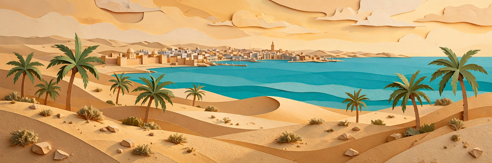
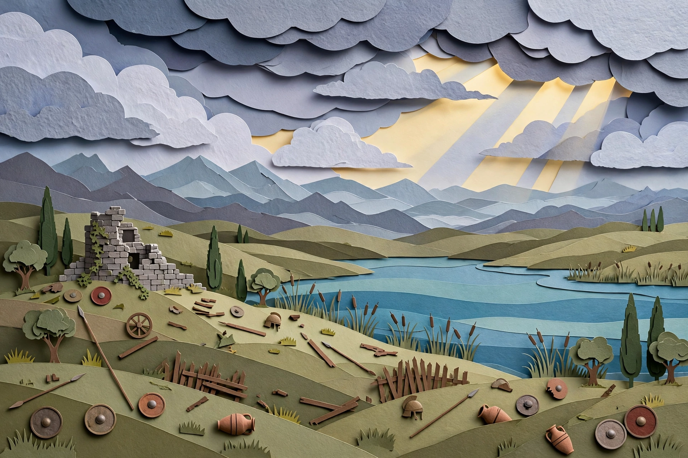


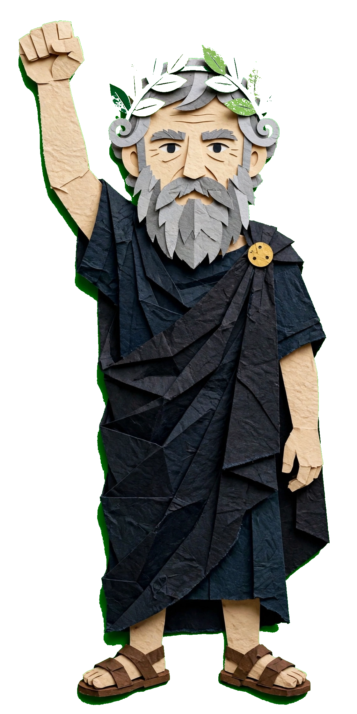

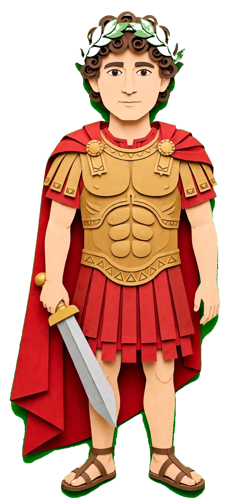
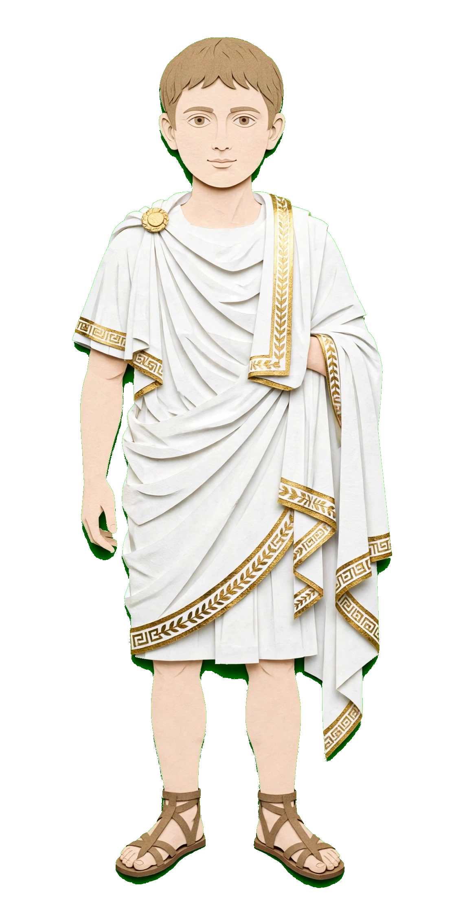
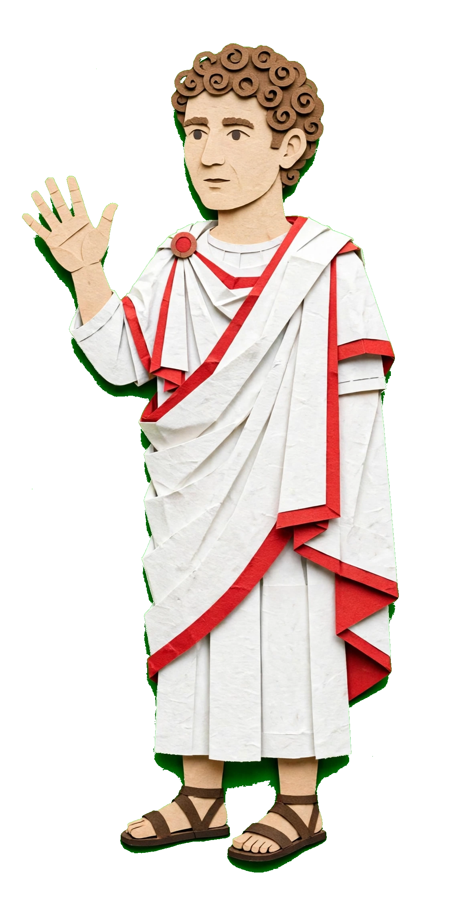
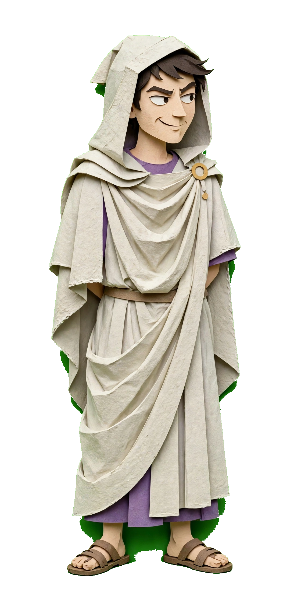
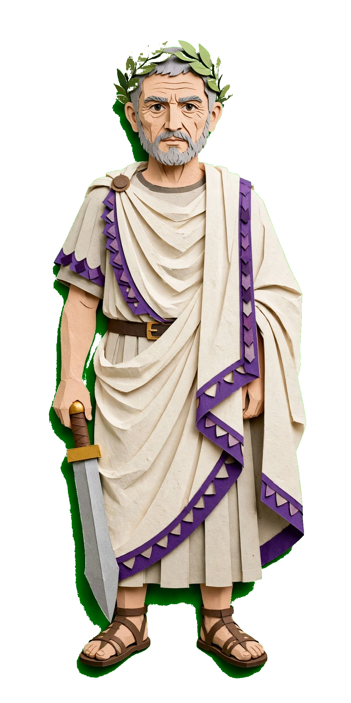
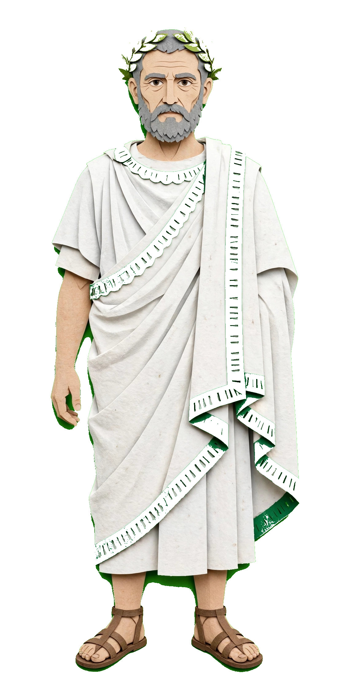
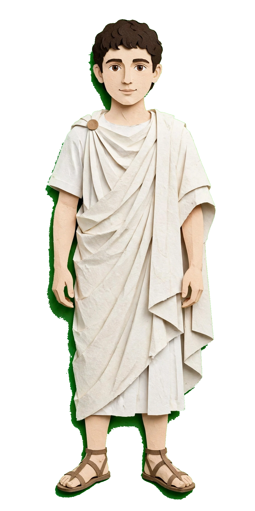

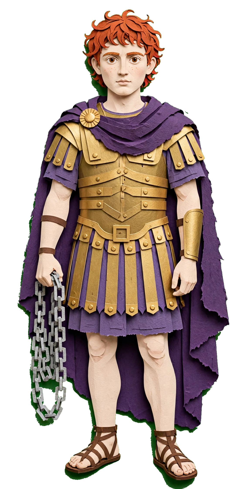
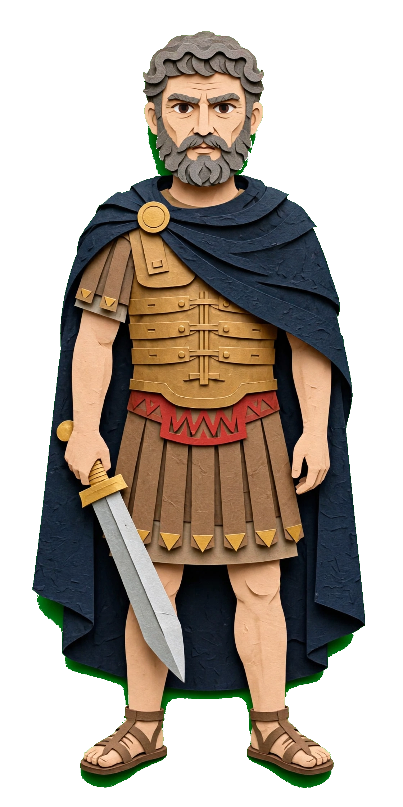

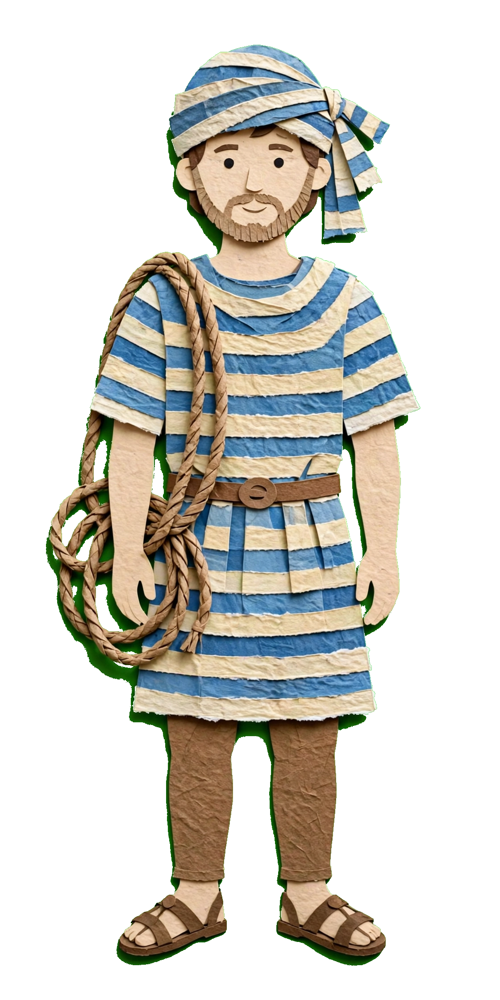
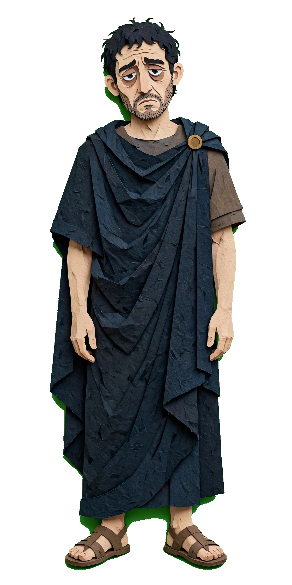

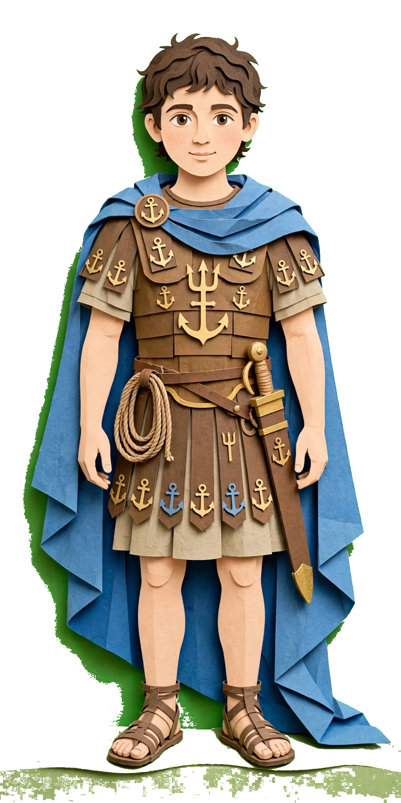

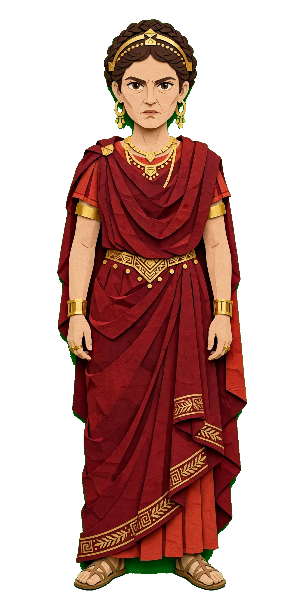
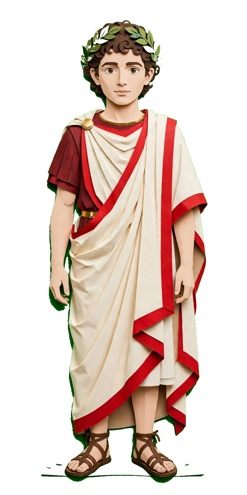
Caesar bleeds out on the Curia steps
Senators parade their 'freedom'
Citizens answer with silence and rage
Antony flees; Senate House burns
The Republic died on those stairs
Antony returns to steady Rome
Citizens' fury as his weapon
Caesar's heir: Gaius Octavius
Backup heir: Decimus — not Antony
The final nail in the Republic's coffin
Antony locks in his power
Governorships of the Gauls for himself
A leash on the conspirators
Dictatorship abolished
Neither man will cooperate — war coming
Antony marches on Mutina
Governor Decimus refuses his law
Siege of Mutina
Senate sends Hirtius, Pansa, Octavian
Siege lifted — both consuls dead
Brutus flees to Macedonia — killed en route
Antony declared enemy of the state
Octavian marches on Rome
Consul with cousin Quintus Pedius
Antony's enemy status cancelled
Octavian allies with Antony
Lepidus joins them
The Second Triumvirate
Lex Titia — powers above the consuls
Modelled on Sulla's Lex Valeria
Proscriptions: hundreds executed
Lands divided: Africa, Gaul, Spain
The Liberators: Cassius and Brutus
42 BC: Battle of Philippi
Antony faces Cassius; Brutus faces Octavian
Antony beats Cassius
False news — Cassius takes his life
Brutus takes Cassius' forces
Armies rebuilt with money
Liberator fleet wins on the Ionian Sea
Veterans defect — Brutus must fight now
Brutus chooses to fight
Oct 23: Brutus crushed; last Liberator dies
Survivors join the Caesarians
Antony lays a purple cloth on Brutus
Friend against friend, brother against brother
Alliances short-lived
Triumvirate splits by region
Octavian vs Sextus Pompey in Sicily
Antony to the East and Parthia
Cleopatra and Antony — an affair
Antony has a wife back in Rome
Fulvia and Lucius Antonius plot war
Propaganda floods Rome
Lucius occupies Rome
41–40 BC: Octavian wins, takes Perusia